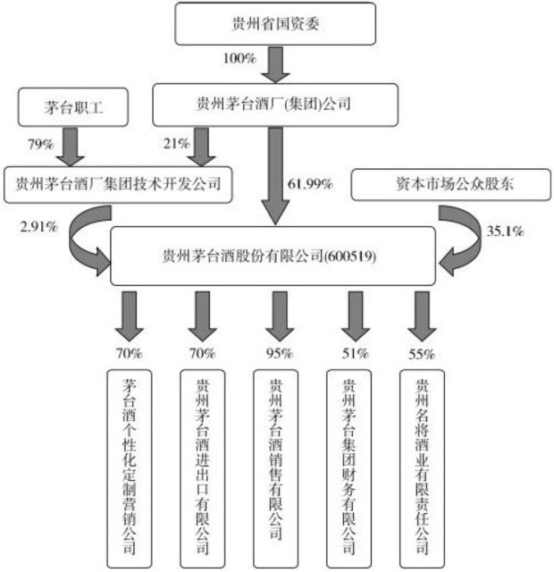

“财报是用来证伪的，不是用来证实的。”
格雷厄姆说：“就理性投资而言，精神态度比技巧更重要。”
投资大师巴菲特曾说：“你必须了解财务报告，它是企业与外界交流的语言，一种完美无瑕的语言。只有你愿意花时间去学习它，学习如何分析它，你才能够独立地选择投资目标。你在股市赚钱的多少，跟你对投资对象的了解程度成正比。”
话说某年，某股票代码排序在前十名的上市公司，经营亏损1亿元。出于某种特殊原因，董事长需要当年实现盈利。于是，财务总监贡献了一条起死回生的“妙计”——只用了白纸两沓，顺利扭亏为盈。
“妙计”分为三步：
第一步，签一份合同。公司在银行有贷款1.6亿元，经过与银行磋商，双方达成协议：用公司账面价值3000万元的华×大厦部分房产作价1.6亿元归还欠款。
第二步，再签一份合同。公司与银行签订买楼协议，作价1.6亿元买回抵押给银行的全部房产，房款暂时欠着。
第三步，公司实现了扭亏为盈。怎么样？比把大象放进冰箱里容易得多吧？
这也行？是的，这也行。公司用账面价值3000万元的房产，归还1.6亿元的贷款，获得了1.3亿元营业外收入，进入利润表。减去当年经营造成的亏损1亿元，当年实现利润总额3000万元。
公司用1.6亿元买回那座价值3000万元的房子。购买的资产，按照买价入账，公司资产里增加了一栋账面价值1.6亿元的楼。至于负债嘛，如果忽略交易费用，那原本欠着银行1.6亿元，现在不多不少还是1.6亿元。
某大牛股，四年涨了60多倍。营业收入年年高增长，利润年年高增长，现金流相当优秀。董事长英明神武，对市场判断极其准确，年年达到乃至超越经营目标，其董秘也被众多调研机构传为“天下第一秘”。看好的研报满天飞，该股成为显而易见的大白马。股价走势证明，任何回调都是买进良机。
很可惜，后来的事实显示，从公司上市的第一天开始，这家公司就一直在造假。其过程大致是：
（1）改制成股份公司时，公司贷款运作至公司之外，以1.6元的价格吃下了1000万余股。
（2）三年后，公司上市，当天股价18元。这1000万余股被分在了几十个私人账户上，由少数高管掌握。
（3）上市后，公司先后投入了近7亿元资金进入这些账户买入自己公司的股票。
（4）公司提出当年计划收入和利润，发布超过50%的高增长盈利预告，股票大涨。
（5）财务部算出计划收入、利润和实际之差，销售部按需制作合同及发票，证券部按照需要的收入金额，抛售个人账户股票，并将资金汇入空壳公司甲。
（6）公司甲或亲自与上市公司签订并履行合同，或将款项分拆打给上市公司的合作客户，由客户签订合同，并将对应款项打入上市公司账户。
（7）银行提供进账单、对账单；会计师事务所出具财务审计报告；上市企业发布财报，兑现良好乃至超预期经营成果；各大券商发布各种吹捧研报。
（8）在股价上涨过程中，公司送股、配股，高价融资。庄家、老鼠仓乘机大捞一把。
（9）次年，选择股价低谷时，证券部控制的账户伺机买入本公司股票，重复上面的故事。
这些账户累计在公司股票炒作中获利17亿元，并将其中约16亿元做进了公司主营收入，制造出一只业绩不断增长的大牛股。同时在市场完成了四次融资，最终使二级市场投资者损失惨重。
这种造假，每笔合同都有对应现金进入，财报表面数字完美。如果不了解公司在业内的地位和产品的市场份额，不懂得运用财报中毛利率、净利率和税收数据与行业内竞争对手数据进行对比，那么踩雷受骗就是大概率事件。
2014年7月，某上市公司被证监会处罚，原因是上市公司隐秘出资，设立空壳公司甲，专门负责从上市公司采购，然后再通过公司乙转手，将采购来的上市公司产品卖给上市公司的下属子公司丙，从而将上市公司盈利数据玩弄于股掌之上。需要上市公司赢利的时候，上市公司高价卖给甲公司，再经过乙公司低价卖给丙公司；需要上市公司亏损时，反其道而行之。整个过程中，上市公司的产品原地不动，只通过合同和仓单的转移就完成了利润操控。公司利用此手段，在5年时间里，累计虚增收入6.6亿元，虚增利润2.2亿元。
相对于第二个故事主角而言，这第三个故事中的造假手法实际上是倒退了，财报里的毛利率、关联交易和运输费用等数据都可能成为破绽。
与后两个故事里造假企业一样，造假公司在被揭穿以前，一般都是经营业绩靓丽，形象良好，被媒体和股评家普遍看好和推荐。然而，无情的事实告诉我们：
（1）只看F10很容易上当；
（2）财报可以用来排除造假企业。
懂得了这两句话，你的投资水平已经有了一次质变式的飞跃。
我国要求上市公司按照公历自然年划分经营年度（有些国家和地区，企业可以自定经营年度起止时间），并按季度披露财报。所以财报分为一季报、半年报（也称“中报”）、三季报、年报，分别向股东汇报对应期限的企业经营情况。其中，年度财务报告必须经过会计师事务所审计。
按规定，年报要求年度结束后4个月内披露；半年报要求在上半年结束后2个月内披露；第一季度、第三季度季报，要求在季度结束后1个月内披露。因此，年报准备时间最充分，信息披露最详细，可信度最高。半年报次之。至于一季报、三季报，相对简单，仅供投资者了解基本数据。
无论是详细的年报，还是简单的季报，都至少要包括三张报表，即资产负债表、利润表和现金流量表。其中每张表又要求分别提供合并报表和母公司报表。
母公司资产负债表、母公司利润表、母公司现金流量表，加上母公司所有者权益变动表，展示了上市公司本部的经营情况。对应的合并报表，并不是一个真实存在的法律实体，它合并了上市公司本部经营及其控制的子公司、孙公司经营情况。合并时，会抵销这些母子公司、子孙公司之间的投资、交易和债权债务。
母公司是个表达关系的词，如同一位女性可能既是妈妈，也是女儿。妈妈或母公司指的是谁，要看说话主体是谁。除了上面提到的四张“母公司××表”特指上市公司本部以外，财报中其他用到“母公司”一词时，指的是上市公司的控股股东，因为财报是上市公司说的话。
由于子公司、孙公司是企业经营的重要组成部分，所以投资者主要关心合并报表数据。知道了这三张表总体上怎么看，就算是入门了。
普通投资者喜欢利润表，投资高手更关注资产负债表。
资产负债表，是企业在报表日（12月31日或季度末）结束那一刻，资产、负债及权益的定格照片。
资产负债表很容易看懂。忘掉那些高深的术语，记住一句话就行了，表的右边，是钱的来源；表的左边，是钱的去处。
知识链接
有时公司会以左为上，以右为下，从“资产总计”那行切断，变左右结构为上下结构。也许是纸张或屏幕不够宽吧，阅读方法是一样的。
钱的来源，不外乎借债或股东投入。所以，资产负债表右边，分为负债和权益两大项。负债告诉你，公司的家当里，有多少是借的钱；权益则告诉你，有多少是股东的钱。依照还钱的紧急程度排列，越急着还的越靠上。
钱的去处，组成企业资产。资产按照变现便捷度排列。最容易变现的当然是货币，放在最前面。最不易变现的固定资产、无形资产、商誉等，放在最后面。
逐项看过去，公司家当一目了然。投资者可以对照以前的数据看，了解每个单项是怎么变的。闭上眼，想象自己是老板，把各类资产如此这般地腾挪，想想他为何这么干，干得对不对，是看财报时最享受的事情。如果自信心不够，就把所有数字同比缩小到自己日常习惯驾驭的数字级别，然后再冒充老板指点江山。
阅读财报的一个重要方法就是跟同行比照着看，看不同项目在总资产中占比有何不同，思考为何不同，这不同是优势还是劣势。尤其是应收票据、应收账款、应付账款、预付款项、预收款项几个项目，可以看出公司与上下游之间的地位，展示公司竞争力的强弱。
也叫“损益表”。资本市场喜欢看，也最容易造假。容易造假的根源是权责发生制。依照权责发生制，没收到的钱，可能被算作收入；没付出的钱，可能被记录为成本；又或者收到的钱，不算作收入；已经付出去的钱，不被记录为成本。
不考虑投资收益和资产减值损失的话，收入减去各类支出，就是营业利润。营业利润是一家公司的核心利润，是持续竞争力的体现，是利润表上需要重点关心的数字。营业利润加上主营业务以外的收支（营业外收支占比大的公司，一般要警惕，都是些不让人省心的货），便得出了利润总额，缴清所得税后，剩下的便是净利润。
上市公司报表中的收入，是不含增值税的。如贵州茅台，如果以819元出厂价销售一瓶酒，收入数字上只能记录819÷1.17=700元。代替税务局收的119元增值税，企业只是过手瘾，不能算作公司收入。
并非每家子公司都是由上市公司100%持股的。那些在子公司里占点股份的股东，他们股份对应的资产，在资产负债表里叫作“少数股东权益”。他们股份对应的利润或亏损，在利润表里就叫“少数股东损益”。从净利润里去掉了它，剩下部分，便是报告期内上市公司股东拥有的净利润了。报表上这一项的名字很拗口，叫“归属于母公司所有者的净利润”。
归属于母公司所有者的净利润除以公司总股本，就得出研究机构和股评人士最喜欢讨论的“每股收益”。
股票价格/每股收益，就是市场最常用的指标——市盈率，简称“PE”（Price/Earning）。它没什么神秘的，只是投资回报率的倒数。20PE意味着投资回报率为5%，8PE则意味着投资回报率为12.5%，仅此而已。只是它和私募股权投资（Private Equity）的英文缩写“PE”相同。需要投资者注意语境，别弄混就行。
记录公司的现金流入和流出。但其中经营活动现金流入流出不是通过完整记录公司现金流水做出的，而是以利润表为基础，参考资产负债表应收应付科目，调整后得出的。所以，表里最准确的数字是期初现金总额、期末现金总额及两者之差。
由于现金收益率为零，所以无论个人还是公司，都不会持有大量现金，而会选择存银行或买个理财产品，这类东西被称为“现金等价物”。
知识链接：资产负债表货币科目里面除了现金及现金等价物，可能还有些不能随便动用的钱，是不算现金及现金等价物的。如存进央行的准备金，有特别约定取款条件和期限的存款等。所以，如果发现现金流量表的现金及现金等价物余额，与资产负债表货币余额不符，不要奇怪，差额就是受限制的货币。
公司涉及现金的活动分为三大类：经营活动、投资活动和筹资活动。
经营活动，是企业销售商品或提供劳务带来的现金收入及对应的现金支出。经营活动现金流净额为负的企业，通常日子不好过（银行除外）。这个容易懂，就是日常说的入不敷出。
投资活动，是企业对内对外投资的支出和收到之前投资回报的情况。投资行为，一要看投的项目是否在企业能力范围内。通常，跨行业扩张，不妙的概率大。二要看投资回报率。投资回报率如果不是显著高于社会资金平均回报水平，管理层就是乱来的，反之，就是对股东有利的投资。
至于筹资活动，则包含公司回购股票、向股东分配红利、借债或发行股票收到的现金以及相关成本。
国内上市公司超过2500家，每家公司发布的年报不少于10万字，总计超过2.5亿字。就算你一年365天都在读财报，每天阅读字数也要相当于一套《三国演义》，这根本不现实。因而，设立一些规则，缩小关注圈，是每个投资者都必须面对的事。规则，依赖于投资理念。而每种规则都可能放掉一些牛股，当然也帮助你绕过一些陷阱，这是硬币的两面，投资者需要自行摸索取舍。老唐自己是先排除ROE（净利润÷净资产）＜15%的企业，再排除上市未满五年的企业。
选定大致要看的股票后，除了以上三张表外，董事会报告和重要事项是必须细读的内容。尤其是董事会报告，最好是多年的连在一起读。通过前后对比，可以判断董事会说话是否可信，对市场判断是否准确，对企业掌控力的强弱等。
对三张表有任何疑问，都需要在附注中找解释。附注最好是逐字细读一遍，但是，多数投资者都没耐心读附注。企业必须披露却又不太想让你明白的东西都在附注里。要想取得比较优势，别人不读的东西，你得读。至于其他部分，第一次认真点儿读，以后就可一眼瞄过了。
巨潮资讯网网址：http：//www.cninfo.com.cn/；
上海证券交易所网址：http：//www.sse.com.cn/；
深圳证券交易所网址：http：//www.szse.cn/
目前三家网站均提供上市公司2000年至今的财报及公告下载。若投资者需要更早的信息，则需要联系上市公司咨询。
上市公司的年报，按照要求，需要在次年4月30日之前披露。如果企业无法按时披露年报，会被交易所停牌处理。无法按时披露年报，通常是种警示信号。若不是对该企业或该行业非常熟悉，建议远离这类企业。
对于自己关注的企业，除了年报以外，还会有很多其他信息披露是不能错过的。最简单的方法，是在雪球（www.xueqiu.com）上关注该股票，而后会收到雪球推送的企业披露信息及相关新闻，这种方法省事不少。
初学者先从贵州茅台酒股份有限公司的财报开始学习，是个不错的决定。之所以推荐使用该公司财报作为范本，基于以下六大理由：
（1）公司主营业务单一，就是产酒卖酒，好理解。2013年公司新增了财务公司业务，但收入占比小到可以忽略。
（2）公司组成相对简单。进入合并报表范围的子公司仅有五家，且其中一家占了公司营业收入的95%以上。新手无须在阅读过程中，把宝贵的时间浪费在梳理复杂的公司关系上。
（3）茅台酒当年销售量与四五年前的生产量有关系，阅读过程中产销相互印证，方便理解不同年度报表数字之间的关系。
（4）公司先收钱后发货，几乎不会有死账、坏账。存货的入账成本远低于出厂价（约占出厂价的不足7%），几乎不可能产生存货跌价损失，报表相对简单。
（5）市场对其研究较多。如果新手在阅读年报过程中遇到不懂的东西，很容易通过搜索引擎，在网络上找到相关资料，快速解决问题。
（6）更重要的是，在A股市场做投资，几乎不可能绕开贵州茅台。即便你不投资它，也可以将这台印钞机作为衡量其他企业投资价值的参照物。这样，从阅读贵州茅台酒股份公司财报入手，时间铁定不会被浪费。
贵州茅台，于2001年8月上市。上市前，公司净资产不足5亿元，上市募集资金近20亿元，其后再未从市场融资。历年已实施的现金分红超过220亿元，其中近80亿元为公众股东所得。目前，公司净资产超过450亿元，市值约1800亿元，其中35.1%为公众股东所拥有。
公司是中国白酒龙头，主要生产销售茅台酒及茅台系列酒。按照2014年半年报数据，茅台酒的销售收入占公司营业收入的95%以上。
公司的白酒生产，由股份公司本部完成。茅台酒的生产，历时五年。第一年的端午开始制曲（曲，酿酒所需的糖化发酵剂）。茅台酒每斤酒需要2.4斤高粱和2.6斤小麦，其中小麦就是用来生产酒曲的。制曲工作重阳节前结束。
酿酒从重阳节开始，名为“重阳下沙”。沙，指本地红而细小的糯高粱。下沙，就是指投放制酒主料——高粱。重阳节之后的三个月里，发酵、蒸煮、摊凉、再下新沙、加酒曲、发酵、蒸煮。到12月或次年元月开始首次蒸馏出酒。之后对酒糟进行摊凉、加曲、收堆、下窖。如此周而复始，约每月取酒一次，直到次年8月第七次酒取完。
第三次至第五次出的酒称为“大回酒”，第六次得到的酒为“小回酒”，第七次的酒为“追糟酒”。大回酒最好喝，第一次、第二次酸涩辛辣，最后一次发焦发苦，但每次的酒都有特别用处。新酒产生后会装入酒坛封存，形成基酒，并分别以“酱味”“醇甜”和“窖底”三种酒体来归纳和区分。基酒存放3年后，进行勾兑。勾兑不加水，是用几种甚至几十种基酒及少量老酒，按照不同比例调和。之后继续存放半年到一年，完成醇化和老熟后灌装出厂。
本部生产的成品酒，会大体按照一个基本不产生利润的价格，卖给下属子公司贵州茅台酒销售公司。然后由销售公司按照出厂价卖给经销商、专卖店或者其他购买者。这种做法，是国内几乎所有涉及消费税的企业都会采用的模式。利用消费税只对生产企业征收的特点，合法避税。目前国内粮食白酒的消费税，是售价的20%外加1元/L。
上市公司贵州茅台，目前拥有五家控股子公司，股权关系如下图所示。

贵州茅台酒销售公司，是上市公司体系里最重要的子公司。上市公司持股95%，茅台集团持股5%。2013年公司白酒销售收入309.21亿元，其中298.55亿元是经由茅台酒销售公司完成的，占比96.55%。
贵州茅台酒进出口公司，上市公司持股70%，茅台集团持股30%。2013年茅台酒出口约11亿元，主要由进出口公司完成。
贵州茅台酒个性化定制营销有限公司，是2013年新设立的公司。上市公司持股70%，北京天信慧通投资公司持股30%。
茅台集团财务公司，上市公司持股51%，茅台集团及其全资子公司习酒公司持有剩余的49%。
贵州名将酒业，上市公司持股55%，贵州金讯贸易公司持股45%。
另外，还有一个不进入合并报表范围的贵州茅台酒厂（集团）投资合作有限公司。合并报表长期股权投资科目显示，上市公司投资400万元，持股40%。
以前还有个北京茅台神舟商贸有限公司，也属于并表范围子公司，于2014年3月注销。
上市公司使用的一系列商标，租自茅台集团。这些商标的租金，约定为年销售收入的1%～2%，租约截至2050年12月31日。其后这些商标无偿归上市公司所有。商标的租金，以及集团在销售公司所占的5%股份，算是集团除持有上市公司股权外，额外拿走的一份收入。
下面老唐帮你算一笔账。如果老唐今天成为茅台集团老板，会让股份公司按照300元一股的价格（够意思了吧，买在山尖上的也给超过25%的利润）把公众股东持有的4亿股，全部回购后退市。具体操作如下：
股份公司现有200多亿元现金，用存货价值约2600亿元（茅台集团党委书记透露的）加上公司拥有的茅台镇土地及厂房设备（若真被要求追加担保，也还有茅台商标和集团一大堆资产可以担保），打个大折从银行抵押贷款1000亿元。按五年以上贷款标准利率6.55%上浮10%，给7.2%的利率，以茅台的经营现金流记录，银行应该会抢破头。
然后，哪怕就按照2013年业绩不再增长，每年卖300亿元的酒，220亿元左右营业利润，还银行72亿元利息，缴了所得税后，还有超过110亿元净利润。零增长前提下，7年足够还清全部贷款本息。以后每年利润全拿，还不用看资本市场脸色——更重要的是，整个过程集团无须额外出一毛钱。如果考虑每年可能还会有一点增长，需时会更短。这么想来，国有资本出让了优质股权，又心不甘情不愿地吸点血回去，老唐认为无须太过计较。
会计师事务所是从上市公司拿钱的，会不会拿人的手短，吃人的嘴软？当然，由于会计师事务所获取证券业务许可，并不是一件容易的事儿。全国目前有7790家会计师事务所，拥有证券牌照的只有53家。53家有资质做全国超过2500家且不断增加的上市公司业务，收入稳定且利润可观。所以，一般而言，会计师事务所也不愿意用牌照冒险，去配合上市公司玩太过分的把戏。他起码要考虑，万一露馅儿，能否找到撇清责任的说辞。
因此，凡是会计师不愿意发表“标准无保留意见”的，我们就完全可以理解为会计师认为账目有问题，收钱有风险。只有“标准无保留意见”的审计报告才有阅读价值。截至2014年4月30日，深沪两市2537家上市公司中，2402家公司被会计师事务所出具了“标准无保留意见”的审计报告。如果会计师发表的不是这句标准用语，请直接把该公司的财报丢掉。若是要炒概念、听消息、看图形，无须拿份假报表，自我麻醉。
会计师事务所可能出具的意见，一共有五种。考虑到会计师是上市公司花钱雇用的，强烈建议投资者按照下表，降格理解会计师的真实意思。
五、经董事会审议的报告期利润分配预案或公积金转增股本预案：经立信会计师事务所（特殊普通合伙）审计确认，2013年度公司实现净利润15,136,639,784.35 元。
根据《公司章程》及相关规定，提取法定盈余公积金 1,184,369,466.72元、提取一般风险准备13,296,286.27 元以及根据公司2012年度股东大会决议实施利润分配方案派发现金股利6,664,077,420.22元，加上年初未分配利润28,700,075,247.50元，本次实际可供股东分配的利润为35,974,971,858.64元。
据公司实际状况和未来可持续协调发展的需求，拟订了以下利润分配预案：以2013年年末总股本103,818万股为基数，对公司全体股东每10股派送红股1股、每10股派发现金红利43.74元（含税），共分配利润4,644,817,320.00元，剩余31,330,154,538.64元留待以后年度分配。
以上利润分配预案需提交公司股东大会审议通过后实施。
这第五段，是投资者比较关心的净利润及分红数据。它代表的含义是，2013年度，公司实现净利润151.36亿元（为方便叙述，数字经四舍五入，下同），提取盈余公积金11.84亿元，提取一般风险准备0.13亿元，减去2013年内实施的2012年度的分红66.64亿元，剩下的钱加上2012年年报的未分配利润287亿元，最后的总数359.75亿元，就是可供股东分配的钱。
由于合并报表体现的并不是一个法律意义上的公司实体，而分红行为只能由法律意义上的公司对自己的股东实施。因此，分红的主体是贵州茅台酒股份有限公司，提取盈余公积也是按照母公司利润表净利润数据（118.44亿元，财报48页）的10%提取。所以，可以实施分红的金额上限，是母公司报表的未分配利润数。当然，由于母公司对整个合并报表范围内的子公司利润具有支配权，母公司是可以通过安排子公司分红来调度利润的。
可以分，并不意味着应该全部分光。公司管理层权衡后，决定向股东大会提出10股送红股1股及现金43.74元的方案，这样会分掉46.45亿元，留下313.3亿元不分。这里面有很多概念需要解释，且听老唐一一道来。
净利润貌似简单，其实很复杂。后面谈利润表的时候，还要细说，此处先举个简单的例子，让读者朋友们有个概念性的认识。
以公司甲为例，若其今年花了70元买原材料，同时产生30元生产制造费用，40元其他税费，然后被乙公司打了张200元的欠条把货拉走。甲公司会在报表上认认真真地记录60元税前利润，并按照25%的所得税率，上缴15元给税务局，而后向股东汇报今年获得净利润45元——其实到目前为止，一毛钱进账也没有，倒是贴出去不少现金。
盈余公积金是法律不让公司分配的利润。中国的《公司法》规定，一个公司盈利后，必须留存至少10%作为盈余公积。这是一个具有“中国特色”的科目，是政府强制公司进行扩大再生产的手段。
按法律规定，盈余公积累计超过注册资金的50%后，由董事会自行决定是否继续计提。盈余公积一旦计提，用途就受限制了，只能用于弥补经营亏损，或派送红股。后者还要保证送股后，盈余公积仍然大于注册资本的25%。
很多朋友不太明白，为何送红股要被扣税。老唐在这里解释一下，送红股，是被视为先拿现金出来分给股东，然后又按照股票面值价格，帮你认购了公司新发行的股票。因为首先是大秤分金银的过程，所以税务局要向股东征收所得税。
送红股这个过程，公司并没有真拿钱出来。股东的持股，也因为所有股东同比扩大而价值不变（一个饼分100份时占10份，和这个饼分110份时占11份，一样多），反而要损失税款。唯一得利的，只有税务局。只是因为资本市场喜欢这个数字游戏，也就有人乐此不疲。
因此，茅台2013年拟定的分红方案是：10股送红股1股及现金43.74元。按照10.38亿股算（准确数字是103818万股），分掉的现金看上去应该是10.38×43.74÷10=45.4亿元，而财报显示分掉了46.45亿元。差额便是上文谈过的送股被视为分现金，10股送1股，在税务局眼里，那就是10股分1元，先分掉了1.04亿元。
用未分配利润或盈余公积送股，习惯叫作“派送红股×股”。用资本公积项目里的钱送股，习惯叫作“转增×股”。转增股看上去和红股一样，账户上都是收到额外的股票，但转增股不用缴税。至于资本公积里的钱，是哪儿来的，为何转增不用缴税，咱们聊资产负债表的时候再谈。
一般风险准备，是专门要求金融企业提取的款项，用于弥补未来“莫须有（可能有）”的亏损。因为茅台公司拥有一家金融企业——茅台财务公司，所以需要计提（计提：计算并提取）一般风险准备。这项计提仅与财务公司放贷额有关，与其他子公司的经营无关。
按规定，一般风险准备计提的标准是“余额不低于风险资产期末余额的1.5%”。风险资产的计算比较复杂。如果对金融类公司有兴趣，可自行学习风险资产余额的计算方法。其他类型企业的股东，知道这么个定义即可。
未分配利润，是从历年净利润总和中，去掉计提盈余公积和分红后的剩余。乍看过去，令人十分高兴，似乎公司有这么多钱等着分。其实不然。一是，这里面很多现金，已经变成土地厂房、固定资产、在建工程及其他投资；二是，有些公司的净利润，是通过无现金流入的方式创造的，只有数字没有钱，永远也无法分配。
至此，重要提示页就看完了。熟悉公司后，拿到这页也就看一眼会计师意见和分红方案，再注意一下是否有异常说明即可。所谓异常说明，当然是很少见的。如公司独立董事或监事跳出来在这里讲两句，那就必须引起投资者重视了。
重要的内容有3节，分别是财务会计报告、董事会报告和重要事项。如果关心一家公司，这三节是必看的内容，也是本书后面篇章主要讲述的内容。在最重要的三节中，财务会计报告的三张表和附注是核心内容。
次要内容有两节，即股份变动及股东情况，董事、监事、高级管理人员和员工情况。如果准备持有某公司，除了最重要的三节外，次要的两节也需要关心。
对于股份变动及股东情况，可以重点观察股东人数的变化，以及前十大股东的变化。股东人数的变化，每期报表都有两个数字（报表第27页），一个是报告期末（年或季度的最后一天），另一个是报告披露前5日。有兴趣观察市场博弈的读者，用这两个数字，加上季报数据披露的股东人数，找出对应当日的股价，可以画出两条很有趣的曲线。
从员工情况介绍中，除了可以了解高管履历、薪酬以及员工结构以外，还可以获取公司员工人数等信息。从员工人数变化，可以看出公司的扩张与收缩。
也可以用资产负债表的“应付员工薪酬”期末值减期初值，加上现金流量表的“支付给职工以及为职工支付的现金”数据，得出员工薪酬总额。薪酬总额除以员工总数，计算出当年平均薪酬。
通过观察平均薪酬数据是否合理（如有些公司造假无方，据此法算出员工平均年薪数千元或者数十万元，就需要警惕了），与往年相比、与同行相比，观察是否有异常，可以帮助投资者避开很多陷阱。例如，茅台年报34页显示，员工1.68万人；财报43页显示应付薪酬减少了0.09亿元；财报50页显示，公司本年度为职工支付的现金共计31.36亿元。（31.36-0.09）÷1.68=18.61万元，这就是2013年公司向员工支付的平均薪酬。由此还可以通过计算衍生出另外一些数据，如人均营收、人均利润、薪酬占利润比等。各位读者有兴趣的话，可以自己慢慢摸索。
会计数据和财务指标摘要，可以使公司股东或对公司已经熟悉的人，迅速了解一些框架性的数据。剩余的其他部分，基本上是官样文章，几分钟浏览一下即可。
知识链接：支付给职工以及为职工支付的现金，不能直接理解为员工所得。因为这里面还包括为员工（除在建工程人员）缴纳的各种保险、福利、补偿等。据计算，若公司以税前工资1万元/月的标准聘请一位员工，公司仅法定必须向社保及公积金管理机构缴纳的与该员工有关的五险一金就合计达4410元，由此，公司实际聘用代价约为14410元。而员工在缴纳了规定由个人承担的三险一金及个税后，到手现金为7454元。
上面简单介绍了次要部分，下面再聊聊另外几份官样文章。从下一章开始，进入最重要的财务会计报告部分。整个财务会计报告讲完了，再回头看董事会报告和重要事项。
此部分主要解释财报里用到的简称，一看就懂。至于“八个营销”，是袁仁国董事长提出的茅台营销策略，网上有很多阐述和解释文章，感兴趣的朋友可以自行搜索阅读。
这里可以找到公司董秘和证代（证券事务代表）的联系方式，如果有事情要咨询公司，直接打电话过去即可。不过，那边接电话的，态度和能力就有好有坏了。有些公司，比较注重投资者关系维护，接电话的热情懂行。而有些公司，如茅台就差很多。
茅台的证代不够热情，很容易理解。举个简单的例子，如果12年前，你拿了20万元入股朋友公司，占股不足三成。12年里，你不参与经营，但年年收到分红。12年累计收到分红超过80万元，且最近两年，公司市价在1200万元到2700万元波动，其中有35%（政府曾逼你朋友白送了你一部分股份）属于你，分分钟可以提现走人。凭良心说，是你笑脸迎你朋友，还是你朋友笑脸迎你？把例子中的万改成亿，大体就是二级市场投资人和茅台公司之间的关系。
据说在某些国家，公司治理部分是估值的重要加减分项。而在A股市场，基本上是一套格式化文字。第一次看财报的时候，还是读一遍吧，尤其是考虑临睡前阅读，有帮助睡眠的神奇作用。这里面若有啥重要东西，都会在“重要事项”里提示，所以你就是睡着了，也不会错过什么的。
建议同上。
不用看。
是的，经验丰富的投资者，首先看的报表一定是资产负债表。实际上，他们也许会翻阅利润表和现金流量表来相互印证，但最终总是聚焦在资产负债表上。
对于新手而言，利润表是收入减去税费得到利润的过程，直观且激动人心。看上去像是公司管理层正毕恭毕敬地向你汇报当年的进账。资产负债表则不然，科目繁多，很难让人集中精力。而且，更让人恼火的是，它不够直观——至少在能够完全理解各个科目代表什么之前，它确实容易让人迷糊。
前面说过，资产负债表的资产部分，是按照变现的难易度进行排列的。预计能在一年内产生收益的资产，如现金、应收账款、存货以及各种类型的有价证券等，被归为“流动资产”，排在前面；那些需要一年以上时间才能产生收益的资产，如地产、厂房、设备、长期投资以及大部分无形资产，则被归为“非流动资产”，排在后面。
老唐觉得，这个分类方法主要是为了照顾债权人（如银行），方便债权人迅速评估企业的长短期偿债能力。作为投资者，老唐尝试按照货币资金、经营相关资产、生产相关资产、投资相关资产四类来分析公司资产。
其中经营相关资产，主要指应收、预付和存货，搂草打兔子，捎带谈谈负债端的应付和预收科目；生产相关资产，主要指固定资产、在建工程、无形资产、商誉和递延等科目；投资相关资产，主要指公司持有的各类证券、债券、理财、其他金融资产和投资性房地产等。
找到“合并资产负债表”，表中“流动资产”科目下的第一个项目就是“货币资金”。
既然是按照变现的便利性排列，当然最容易变现（变成现金）的，毫无疑问就是货币资金。在茅台的合并资产负债表里，我们看见货币资金期末余额是251.85亿元，年初余额是220.62亿元。这两个数字告诉我们，茅台公司及其子公司2013年全年合计增加货币251.85-220.62=31.23亿元。
往后翻两页，读者可以看到母公司资产负债表的货币资金项目，期末余额是117.68亿元，期初余额23.46亿元。这两个数字显示，母公司（再次提醒，就是营业执照为贵州茅台酒股份有限公司的上市公司）年内增加了94.22亿元货币资产。
值得投资人关注的货币资金数据，不是股份公司本部的数据，而是合并报表数据。合并报表展示的，是公司本部及其下属子公司合计控制着多少货币资金。至于多少放在股份公司本部（母公司资产负债表里），多少放在子公司账户，那只是一个内部划拨行为罢了。
上市公司可以通过预收子公司款项或决定让子公司分配红利，轻松地将货币从子公司账户划拨至上市公司账户。之所以要划拨，通常是因为某些支出，必须以上市公司为主体，如向股东分红或者进行新的投资支出等。所以，老唐在这里要提醒新朋友，预收子公司款项，仅仅是公司内部资金划拨行为，母公司资产负债表中的“预收款项”科目没有观察价值。
“货币资金”后面，第二列“附注”项下显示“（一）”，表示对“货币资金”项目的解释，体现在合并报表附注的第一项中。报表附注，是阅读报表的重要帮手。读者对报表里的任何项目或数字有不明白的地方，马上在PDF阅读工具里使用搜索功能，输入该项目或该数字，如“货币资金”或“25,185,009,331.68”，就可以搜索到所有与之相关的内容，从中找到该项目的解释。
从明细表里，我们看到货币资金（251.85亿元）由使用受到限制的货币资金（31.93亿元）和不受限制的货币资金（219.92亿元）组成。
使用受限制的货币资金，“期初数”栏目空白，显示上年没有。也就是说，公司上年的货币资金全部是现金及现金等价物。如果读者朋友读过2012年的茅台财报，就会知道受限制资金是因茅台财务公司的经营而产生的。“期初数”为零的原因，是2012年茅台财务公司还没有开始营业。
2012年底，茅台公司的现金及现金等价物总额是220.62亿元。从2012年的220.62亿元变成2013年的219.92亿元的过程，就是合并现金流量表需要展示的内容。由此，我们可以发现资产负债表与现金流量表的一个关系：现金流量表负责展示资产负债表货币资金科目里“现金及现金等价物”的变化过程。
什么是现金及现金等价物呢？阅读财报时，碰到不明术语，最可靠的不是百度，而是在财报内搜索会计政策定义。如本项目，读者在PDF阅读工具里输入“现金及现金等价物”进行搜索，可以在财报第60页找到如下定义：
现金及现金等价物包括库存现金、银行存款、其他货币资金、存放中央银行可随时支取的备付金、存放同业款项、拆放同业款项、同业间买入返售证券，以及企业持有的期限短（一般指从购买日起三个月内到期）、流动性强、易于转换为已知金额现金、价值变动风险很小的投资。
库存现金，是公司及子公司出纳保险柜里的现钞，包括人民币和外币；银行存款无须解释，大家都懂。
其他货币资金，指企业因指定目的而存在银行某专户里的钱。如临时到外地采购，在采购地银行开立只付不收专户里的钱；专项投资款；期限较短（通常指三个月以内）的承兑汇票或信用证保证金等。
存放同业款项、拆放同业款项、同业间买入返售证券，都可以简单地理解为金融机构之间的资金拆借。
“企业持有的期限短（一般指从购买日起三个月内到期）、流动性强、易于转换为已知金额现金、价值变动风险很小的投资”，指企业持有的三个月内到期、随时可以卖出去、能卖多少钱基本已知（价格波动小）的投资。如国债、大型企业短期债、银行承兑汇票、货币市场基金等。需要提醒各位注意，股票不算。股票不符合“易于转换已知金额现金、价值变动风险很小”的要求。
那么，货币资金里，不属于现金及现金等价物的、不体现在现金流量表里的“使用受到限制的货币资金”，指的是什么呢？表中列出了明细：“存放于央行的法定准备金和不能随时支取的定期存款”。
茅台公司只涉及这两种。在各位遇到的其他公司报表里，可能还有被司法机关冻结的存款；被质押的存款；根据借款合同约定的某账户中必须保持的最低存款余额；公司信用卡账户存款；为了开具银行本票、银行汇票、银行承兑汇票、信用证而存入银行的保证金；保险公司的资本金存款等，也算使用受到限制的货币资金。总之，凡是不能随时支取的货币资金，都不算现金及现金等价物。
存放于央行的准备金，指的是金融机构（银行、财务公司等）存放于央行的钱，一般工商企业是没有的。准备金也分法定准备金和超额准备金。法定准备金，是吸收到存款后，必须按照央行规定比例存于央行的，不可以随时支取，不属于现金等价物；超额准备金，是金融机构自愿存于央行收利息的钱，可以随时支取，属于现金等价物。
存在其他金融机构的定期存款，有些到期才能支取，有些只需提前通知金融机构就可以支取。后者算现金等价物，前者不算。当然，此处也有灰色地带：有些定期存款，公司可以和金融机构约定一个双方都同意不会实施的“通知即可支取”条款，可以改变资金性质。
这里，请读者朋友注意一个细节：承兑汇票保证金、信用证保证金，究竟算成“现金及现金等价物”科目里的“其他货币资金”，还是算成“使用受到限制的货币资金”，公司会计有一定的自由决定权。按照中国注册会计师协会的意见（不是规定），票证到期日在三个月内的，保证金建议视为现金等价物；超过三个月的，建议视为受限制的货币资金。实践中，有视为现金等价物的，也有视为受限货币资金的。
母公司资产负债表“货币资金”数额，与合并报表“货币资金”数额的差额，是下属全资子公司或控股子公司账户里的货币资金。如茅台，截至2013年12月31日，有134.17亿元（251.85-117.68）的货币资金在下属子公司账户里。而2012年12月31日，则有197.16亿元（220.62-23.46）货币资金在下属子公司账户里。
对公司而言，通常有三种途径可以产生货币资金。①发售股票或举债；②出售资产或业务部门；③经营活动的现金流入持续大于现金流出。符合第三种情况的公司，通常都具有某种持续性竞争优势。
对于货币资金的分析，老唐坚持一个基本原则：货币资金需要与短期债务及经营需要相匹配。与短期债务的匹配情况，代表企业的偿债能力。与经营需要的匹配情况，代表企业的资金运用能力。
货币资金过小，则可能代表偿债能力不足，或者经营中捉襟见肘。货币资金过大，则代表资金运用能力较弱，或者可能资金性质有问题。依据以上原则，实践中投资者要注意以下四种情况：
（1）货币资金余额比短期负债小很多；
（2）货币资金充裕，却借了很多有息甚至高息负债；
（3）定期存款很多，其他货币资金很多，流动资金却严重缺乏；
（4）其他货币资金数额巨大，但没有合理解释。
正所谓“事有反常必为妖”。以上状态中，情形（1）可能代表公司有短期偿债危机，情形（2）（3）（4）则意味着貌似充裕的货币资金，可能存在虚构、冻结，或者早就被大股东占用，只是在报表日前几天回到公司账上，过后又会消失。这几条，都是老唐排除公司的重要准则。
如茅台公司，没有有息负债（财务公司吸收存款，而后存入其他金融机构赚息差的钱，可以不算有息负债）；经营活动中持续产生大量现金流入；投资计划加分红计划，累计不超过百亿；账上保留着超过200亿现金及现金等价物，属于典型的资金运用能力低下。这可以视为公司价值评估中的扣分项。
凡是涉及增值税的企业，应收票据、应收款项和收到的现金里，都包含代税务局收的增值税。因而资产负债表的应交税费科目里，也包含代收的增值税。但利润表里的营业收入，是不记录增值税的。在计算他们之间关系时，不能忽略了增值税。
知识链接：增值税
增值税是中国第一大税种，它的75%归中央政府所有，25%归地方政府所有。2013年国内增值税总额2.88万亿元（不含进口部分），占当年政府税收总额的26%。
增值税是流转税，无论是否盈利，只要涉及商品生产、批发、零售和进口活动，都要缴纳增值税。简单说，你用100元采购原料，经加工后150元卖掉。中间的50元，就是增值额。无论这部分增值额是否足以覆盖其他成本，均不影响税务局按照法定税率对你征收增值税。
增值税是价外税。价外税指公司采购时支付增值税，不计入成本；销售时收来的增值税，也不计入收入。通俗一点说，就是义务帮税务局跑腿儿。
对上市公司而言，增值税率主要有17%、13%和0三档。在阅读财报时，你可以在搜索栏中输入“增值税”搜索，找到公司商品或服务对应的增值税率。但老唐要提醒各位读者注意，17%是商品售价的17%，不是商品售价和增值税总和的17%。例如，贵州茅台酒如果按照819元/瓶出厂，其缴纳的增值税不是819×17%=139.23元，而是819÷1.17×17%=119元。茅台公司收到经销商交来的119元增值税后，扣下自己采购过程中支付的增值税，将差额和供应商开给的增值税票，一起交给税务局。
增值税对商品征收，营业税对服务征收，理论上不会重复征收。当前政府正在推动营业税改增值税。未来的趋势是增值税逐步替代营业税，对商品和服务统一征收。
几乎每家上市公司报表里都有应收票据。哪怕是茅台这种一贯都是客户提前打款、排队等货的企业，也可能因某些原因（如照顾老经销商资金调动的偶尔不方便）收下一些票据。对于销售方而言，销售产生了“应收票据”；对于购货方，负债栏目中便产生“应付票据”。
应收票据科目下的票据，可能是银行承兑汇票，也可能是商业承兑汇票，两者代表的含义大不同。
银行承兑汇票，是由银行承诺兑现的，到约定期限，持票方确定可以拿到现金的票据。考虑货币的时间价值（假设市场资金成本为月息1%，则一个月后的100万元现金，约等于今天的99.01万元），银行承兑汇票的价值略低于同等面值的现金。收到银行承兑汇票的企业若急需用钱，可以打个折扣，向任意一家银行换取现金，这种行为被称为“贴现”，折扣率被称为“贴现率”。
知识链接：贴现
银行承兑汇票贴现是银行的一项资产业务，汇票的支付人对银行是负债，两者实际上是一种间接贷款关系。它分为贴现、转贴现和再贴现。
贴现：指持票人在汇票到期前，为了取得资金，贴付一定利息将票据收款权转让给银行的行为。贴现是银行出借资金的方式之一。
转贴现：指银行在资金临时不足时，将已经贴现但仍未到期的票据，交给其他银行或贴现机构获取资金的行为。
再贴现：指中央银行通过买进银行持有的已贴现但尚未到期的票据，向银行提供资金支持的行为。
贴现率：在人民银行现行的再贴现利率的基础上上浮。贴现率是一种市场价格，由双方协商确定，但最高不能超过现行贷款利率。
由企业开出的商业承兑汇票，可信度就没有银行承兑汇票那么高了。能否按期足额兑付，取决于开票企业的财务状况和诚信度。
理解了银行承兑汇票和商业承兑汇票的不同，通过查看“应收票据”的组成，投资者便可以大致了解公司的销售政策及市场地位。以茅台公司为例，茅台公司的应收票据全部由银行承兑汇票组成，证明企业地位强势，产品抢手。反之，如果里面有大量的商业承兑汇票，则说明企业采用相对宽松的销售政策。如果企业的应收票据一直是由银行承兑汇票组成，某年商业承兑汇票突然大量增加，就证明企业的产品或服务的销售遇到了困难，开始放松销售政策。
因为票据可以贴现、转贴现和再贴现，于是就产生了票据交易市场。正常情况下，持票人将持有的票据贴现给银行，获得流动资金，银行也有利可图。当银行资金紧张时，便进行再贴现。其他资金头寸充裕的银行，会到票据市场上买票据，相当于迅速放出一笔贷款。所以，票据贴现是银行一块挺大的业务。然而，如果一家非金融企业报表里有与正常经营规模不匹配的应收票据，那么，这家公司很可能是在票据市场当炒家，也算是不务正业，投资者需要对其提高警惕。
应收账款就是赊销，也叫“白条子”。现如今，大部分产品都是买方市场，通行的模式是买家先拿货，一段时间后（称之为“账期”）付款。在这种模式下，对销售方而言，就产生了“应收账款”；对购货方而言，在负债一栏就产生“应付账款”。这样的市场环境下，还能够做到先收钱后给货的企业，或者现钱现货的企业，投资者在估值时，是可以给予加分的。
一家企业有销售发生，要么收了现金，要么收了票据，要么就变成了应收账款。总体来说，就公司经营稳健度和产品竞争力而言，从优到劣，可以排序为现金、银行承兑汇票、商业承兑汇票、应收账款。
买东西的人没给钱，但按照权责发生制的会计规则，签了合同交了货，基本就可以确认收入，产生利润了。利用这一原则，有些公司会因为某些原因放货出去，以增加应收账款，虚增收入。正所谓白拿谁不拿，不拿白不拿，这样放货当然很容易创造收入。但从企业股东的角度看，这无疑是危险行为，很容易使公司产生巨额损失。曾经的优质股四川长虹，就是这样倒在高达45亿元的应收款上。该公司一次性产生了37亿元坏账，把多年累积的“利润”一次赔了。
因此，如果一家企业应收账款大幅增长，增长幅度超过同期收入增长，应收账款回款速度低于行业平均水平，或呈现明显下降趋势，往往预示着两种可能：公司临时放宽了信用政策，加大赊销力度；或公司提前确认收入甚至虚构收入。
另外，如果公司应收账款占收入的比例比较大，且有很大部分（如超过三成）是一年以上应收款，此种情况下，投资者就需要警惕公司收入的真实性。
还有一种需要投资者警惕的情况，且容易被一般的财报阅读者忽略——那就是应收账款非常低。财报数据的分析，要结合公司的商业模式考虑。如果一家众所周知先款后货或现款现货的企业，没有应收款或应收款很低，当然是极好的。若是产品名不见经传，市场竞争激烈，同类替代产品多如牛毛，居然也没有应收款。那会是什么情况？收入造假！
当年的蓝田造假案，便是由此原因引发财报分析人士怀疑的。蓝田股份是卖水产品的企业，年收入近20亿元，基本现款现货，应收账款只在百万级别晃悠。财报分析人士就问：“这么多钱为什么不走银行呢？”公司回答：“我们那里偏僻，要办银行结算，必须要去70公里外，而水产品都是在基地买活的，所以就现钱现货了。”分析人士就继续问：“你一年20亿元的交易，居然没有银行去你家镇上开设分支机构？这个数额，就算把分行开你家池塘边，银行也得挤破头吧？”这样尖锐的问题，公司当然无言以对。
常识告诉我们，应收账款拖欠的时间越久，变成烂账的概率就越大。出于谨慎原则，会计准则要求公司对应收账款必须计提坏账准备。
这份坏账准备比例表达的意思是，一年内的100万元应收账款，公司会把它当作95万元的资产；若是欠了两到三年的应收款，100万元只能当70万元算；至于5年以上的100万元应收账款，在资产负债表里的价值视为零。计提的坏账准备，在资产负债表，是一种资产损失，减少公司资产账面值；在利润表是一种费用，需要从当期的利润表里减去，降低企业当期利润。
同时，公司还会为单项金额在500万元以上且占净资产超过千分之一的应收账款，单独进行减值测试，单独计提坏账准备。
需要注意的是，无论部分损失入账或是全部损失入账，并不影响这笔债权的存在。对公司而言，这笔账依然有权追讨，也需要追讨。一旦在某年公司将这笔欠款收回来了，实际收到的钱和报表上账面价值之间的差额，还可以回到利润表“资产减值损失”科目冲抵，从而增加利润。很不幸，这个本来出于谨慎的规则，也被资本市场玩家演化为操纵利润表的热门手段之一：积极计提坏账准备，降低本期利润；下期收款转回，获得财报利润增长。
大部分公司，都是用类似茅台这种账龄分析法加单项减值测试法来计算并提取坏账准备的；也有一些公司使用的是余额百分比法（不区分时间，直接对总数提一个百分比）；近来还有采用摊余成本估算的（摊余成本概念，将在投资相关资产里解释），方法众多。
在报表里输入“应收账款”搜索，可以在报表附注中找到自己关注的公司使用应收账款坏账计提的比例。请注意，不同的行业，使用的坏账计提比例可能不同。甚至同一个行业里，不同公司的计提比例也可能不同。
坏账准备是需要从当年利润里减去的。计提越少，意味着企业当年将会产生出更多的“利润”。如果你关心企业利润的质量，那就必须关心公司的计提标准。一般来说，计提标准越严格的公司越值得信赖。至于同行业内的公司为何会有这么大的不同，只有致电公司详细咨询了。
虽说计提标准越严格的公司越值得信赖，但如果公司的标准一贯宽松，突然严格，也可能是破罐子破摔，意图“洗大澡”做低增长基数，或为了次年转回坏账准备、美化利润表打算；同样，一贯严格，突然变得宽松，美化当年利润的意图也很明显。请投资者牢记：公司改变会计政策（含会计估计）是大事儿，遇见这种情况，一定要打起精神思考原因和影响。
老唐在这里要跟各位读者强调一句，报表里汇报的应收票据、应收账款、其他应收款、预付账款等数据，都是已经减过坏账准备后的净值。
因为知道投资人警惕大额应收账款，有些公司会以客户名义打一笔现金进来，冲销数额巨大或账期过长的应收账款；然后，再把这笔钱通过其他应收款、预付款、购货款等名义，从公司转出，从而将和经营有关的应收款，变成与经营无关的其他应收款、预付款或存货。因而，如果应收款长期挂账的企业，突然有了一笔大钱解决了应收账款问题，投资者仍然要观察企业是否新增了其他异常支出。
当然，在流动资产项目里造假，属于比较低级的造假手段，容易被识破。比较高级的造假，是将应收账款收回，利用在建工程、购买无形资产、长期股权投资等活动将资金流出，然后光明正大地通过折旧、摊销或减值完成“毁尸灭迹”，这很难被查出来。正所谓江湖处处有陷阱，所以，才会江湖越老，胆子越小！
预付账款，是预付给供货单位的购货款，或者预付在建工程价款等。对于收钱的公司，便是负债端的“预收账款”科目。
一家公司，如果经常需要预付大量款项给供应商，一般说明企业在整个商业生态链上地位不高或信用不好。预付款，无论是针对在建工程的预付款，还是给供应商的预付款，都可能成为企业造假的重要资金出口。当你发现公司预付账款大幅增长，尤其是预付工程款或预付一些专利技术或非专利技术的采购款大幅增长，则企业很可能是通过预付款流出资金，然后以营业收入的面孔，将资金重新流回公司虚增利润。
除了预付的数量问题，还要注意预付款的时间问题。长时间挂账的预付账款，很可能并不是什么采购，而是以此名义将上市公司资金挪为他用。因为正常经营中，不会有企业真傻到本不着急要货，却提前很多天把钱打给别人。
投资者需要持续关注公司历年预付款占营业收入或营业成本的比例。如果该比例发生大幅波动，就需要寻找合理解释。无法找到合理解释的，投资者就要考虑防假、防雷措施。
应收利息，是公司持有各类债权期间应该收到的利息。应收股利，是公司持有股权期间应该收到的其他公司分配的股利。与之对应的另一方，便是负债端的“应付利息”和“应付股利”科目。这两个都很简单，一看就懂，此处不再多讲。
其他应收款，通俗讲就是一个垃圾筐。所有跟主营业务无关的应收款，企业都会放进这个栏目。企业可能用它隐藏短期投资，截留投资收益；可能用它转移资金，如大股东占用上市公司资金；可能用它来私设小金库，将款项源源不断地转移到账外；可能用它来隐藏利润或费用，调节报表。与之相对应的，便是负债方的“其他应付款”。
优秀上市公司有个特点，就是“其他应收款”和“其他应付款”科目涉及金额极小，甚至为零。投资者如果发现这个科目的数字比较大，可以先抱着公司经营不够规范的初步印象来看财报。
还有，如果企业账上没几个钱，还容忍大量应收账款和其他应收款存在，投资者可以直接怀疑应收款造假。道理很好理解，自己穷得揭不开锅，哪有大把钱借给别人。事反必妖嘛。
长期应收款，是2007年新增的报表科目。指企业融资租赁产生的应收款项和采用递延方式分期收款，实质上是具有融资性质的销售商品和提供劳务等经营活动产生的应收款项。
所谓融资租赁，就是公司买个大件（如挖掘机、大货车、厂房、机床等）租给需要用这个东西的企业A，双方约定A每年或每月支付多少租金，N年或N月后，按照某价格把旧设备或厂房卖给A。租金加上旧货成交价之和大于最初买价的部分，相当于是A为这笔借款支付的利息。
所谓递延方式分期付款，就是虽然看上去是分期付款销售商品，但后面欠的钱约定有利息，相当于借了一笔款给对方。或者索性可以理解为公司卖了货（或提供了劳务）给企业A，收到全部款项后，又把这笔款子借给A用，然后A按约定利率付息。
以上两种变相融资行为产生的应收款，就按照规定单独列在“长期应收款”科目里。若企业是借款的那一方（公司A），该项目则显示在负债端的“长期应付款”科目里。
存货是企业以出售为目的持有的商品、处在生产过程中的在产品以及相关原材料等。报表展示的存货成本，主要由原材料、工人工资、制造费用构成。
原材料和工人工资都容易理解。制造费用，是企业生产车间为生产产品或提供劳务而发生的工资福利、折旧费、修理费、办公费、水电费、备件材料消耗、劳保、季节性或修理期间的停工损失等费用。它会被财务人员分摊到单个产品上，进入存货成本。
上市公司通常按照成本和可变现净值中较低者计算存货价值。也有些公司，为虚增当期利润，故意不对已经贬值的存货计提跌价准备，减少当期费用。因此，如果一个行业的存货有贬值特性，投资者就需要了解同行业其他公司对存货计提跌价准备的标准，再与自己关注的公司进行比对，以衡量公司存货价值的真实性。
需要提醒投资者的是，有些行业的存货风险要高很多。如新鲜食品或高科技制造业，一旦过了保质期或者行业发生重大改变，存货价值可能会归零（想想过期食品饮料、BB机、胶卷及胶卷相机）。而有些行业的存货，基本不存在计提存货跌价准备的问题，如高端白酒。这些特性，需要投资者在跟踪自己心仪公司的时候，依照公司产品特性，区别对待。
除了应该计提跌价准备而不计提之外，与存货有关、容易出问题的地方还有两种：一是通过虚构商品采购流出资金，再将资金流回企业、虚增利润；二是通过加大生产，降低单位产品的成本，从而欺诈性地提升毛利率，虚增本期利润。
第一种容易理解，造假者尤其喜欢通过虚构价值和数量不易确定的商品采购，将资金流出体外，再通过购买本公司产品或服务的形式将资金流入，创造收入和利润。这种造假，往往伴随存货增长大幅超过同期营业成本增长幅度，且所备存货与企业销售速度相比，显著高于同行业水平。
第二种情况理解起来稍有难度。下面老唐具体解释一下加大生产如何能够虚增利润。
资产负债表的存货项目之所以能够影响利润表的毛利率、毛利润和净利润，是因为存货的变化遵循“期初存货+本期生产（购买）-本期销售=期末存货”的计算规则。即本期生产的商品，先进入存货，然后再从存货拿出来，变成本期销售。
一家公司总有些成本和生产量无关，无论你生产一件产品还是一万件产品，都需要如数支付这一成本。如场地租金、生产人员基本工资、设备的折旧等。而另外有些成本，则和产量直接挂钩，多一件产品就多一份成本，如材料成本、效益奖金等。前者通常被称为“固定成本”（或“上头成本”），后者通常被称为“可变成本”（或“直接成本”）。
成本由固定成本和可变成本组成的特性，使得规模经济成为可能。大规模生产商可以将固定成本分摊到更多的产品上，使单位产品成本低于小规模生产商，在保持同样利润率的情况下，可以让利消费者获得市场竞争优势。
公司A，去年生产并销售了产品1万件。总生产成本为200万元，其中固定成本100万元，可变成本100万元。单件产品成本为200元，其中固定成本和可变成本各100元。出厂价400元，毛利率50%。
今年预期市场没有变化，订货量还是1万件。公司管理层出于某种目的，意图美化利润表，于是决定：今年生产产品2万件。2万件产品，共计消耗固定成本100万元，可变成本200万元，合计总成本300万元。折合每件产品成本150元，其中固定成本50元，可变成本100元。
各位读者，接下来，就是见证奇迹的时刻！公司今年还是销售了1万件，出厂价依然是400元，然而产品成本由200元锐降为150元，毛利率从50%提升为62.5%，毛利润增加50万元，增幅高达25%。财报数据会展示出一幅企业深化管理，内部挖潜，大力降低成本，为股东创造利润的欣欣向荣的景象。
只须使劲儿生产而无须努力销售，毛利润居然增加了。奇迹是如何发生的？奥妙就在生产的产成品，首先要全部计入存货，而后再按照当期销售的数量，体现在利润表的营业成本里。企业通过扩大生产，将固定成本打入更多的存货里，表面上降低了当期销售产品的成本，提高了毛利率，增加了利润。但这个利润增加，是以存货增加、当期税收增加为代价的数字游戏，是实实在在的自欺欺人。丢开报表看实质，企业的价值非但没有增加，反而可能因存货积压带来存储成本增加、减值准备增加，甚至会因产品过时而产生存货价值归零的风险。
因而，毛利率的提升，既有可能真的是产品竞争力提升或生产成本下降的表现，也可能是因产成品库存增加造成的。如果是产品竞争力的提升，可能伴随着产品在市场的旺销或提价；如果是生产成本的下降，则需要了解同行业是否有近似水平的下降。如果仅仅是因产成品库存增加造成毛利率提升，投资者就需要警惕财务欺诈了。这种现象在固定成本比较高的行业比较多，但固定成本低的行业同样可能出现——北方某白酒公司的最新财报，就展示了这样的操作。
因为生产（或采购）的产成品首先要全部计入存货，而生产成本可能因为物价变化等多种原因各期不同，所以，存货销售时，采用什么规则出仓库，也能显著影响利润表的营业成本。
在茅台财报中输入“存货的计价方法”进行搜索，可以在财报里找到公司采用的存货政策。常用方法有先进先出法、后进先出法、加权平均法和个别计价法。借用网络流传的通俗化解释如下：锅里有新饭有剩饭，你先吃剩饭，就是先进先出法；你先吃新饭，就是后进先出法；你把它们搅和在一起吃，就是加权平均法。至于个别计价法，则用于那些不能替代使用的存货，或者为特定项目专门购入（生产）的存货及劳务。最新的会计准则，建议企业使用除了后进先出法以外的其他方法。
这部分内容，很多财务书籍会讲厚厚一叠。老唐认为，对投资者而言，公司采用任何方法都不重要。拉长看，规则不变，影响可以忽略，因而无须浪费时间。只有在公司突然改变存货计价方法时，投资者才需要打起精神，仔细思索改变的原因和产生的影响。老唐一直反复强调，任何会计政策的改变，都需要投资者高度重视。
阅读延伸：高端白酒为什么不需要计提跌价准备
说高端白酒不需要计提跌价准备，并不是说高端白酒的市场价格不会下降。而是首先因为其产品保质期长，甚至伴随着时间推移，品质和价格会逐步提高；其次是因为高端白酒毛利率高，存货的入账成本远低于销售价格。无论产品市场售价如何波动，也不具备跌至存货成本以下的可能。这一特点使得高端白酒企业无须考虑存货跌价准备的问题。
因为单瓶茅台酒库存成本仅不足40元，而目前含税出厂价为819元。两者差距巨大，因而无须计提存货跌价准备。
由于茅台酒需要库存五年，且市场价格远高于生产成本，因而存货的增加，对公司而言，就是实打实的价值增加。理论上，公司应该尽最大可能生产，无论当期是否有销售。事实上，公司也是这么做的。
存货里面，还有一种很好玩也很容易造假的东西，即生物资产。茅台2013年财报第42页“合并资产负债表”中，有“生产性生物资产”这么一栏，该科目中数字空白，证明公司没有这个东西。这东西一般出现在农、林、渔、牧行业，包括动物、植物，如猪牛羊、鲤鱼王八、鲍鱼海参、蔬菜树木等。
如果这些东西是用于生产的，需要在资产负债表的“非流动资产”里单列“生产性生物资产”汇报；如果是用于消耗的，就算进存货，同样要计提折旧。简单说，一头猪，如果是母猪或种猪，算生产性生物资产；如果是准备出售的肉猪，就算消耗性生物资产，是存货。
生物资产的价值判断存在很大的难度。猪、牛、羊、兔也许还可以大致清点一下，水里的鲤鱼、王八、鲍鱼、海参，不但难以盘点数量，没办法测量大小，甚至连是否存在也不好确定，只能根据相关票据及经验判断，因而成为造假的高发地带。当年轰动股市的蓝田造假案，造假者就是指着20万亩湖水告诉会计师：“这下面有N万吨王八鱼虾，且由于本公司高科技养殖技术，王八鱼虾的繁殖率和生长速度，比同处于湖北的同行业上市公司高很多。所以，我们的每亩产值是他们的10～30倍。你做账吧！”
生物资产做了假账，之后填坑也很容易。需要的时候，公司可以直接告诉会计师，王八发瘟病，死光了，连王八蛋也没留下。死了，尸体呢——尸体烂在湖底了。
同时，消耗性生物资产的减值准备，也可能成为农、林、渔、牧公司调节利润的手段。公司会告诉股东，最近口蹄疫横行，因而公司库存猪牛羊需要计提减值准备，使当期利润减少。下期报表告诉你，没事儿，口蹄疫并没有影响咱家的猪牛羊，堂而皇之地将计提的减值准备转回，利润又魔术般地增加了。
所以，老唐提醒各位读者，农、林、渔、牧行业是造假高危区域。历史经验证明，除了农、林、渔、牧，软件、集成电路、生物科技也是造假高危区域。
为什么这些行业是造假高发地呢？具体分析，这些行业大致有这么几个共性：税收优惠多；产品不易核查；产品差异大，不易找到价格参照物；产品有没有移交或交货量的大小不易监控。
吹牛不上税，但造假收入税务局要抽税，这就有了造假成本之说。因而税收政策有减免的领域，由于造假成本低，必然容易产生造假。如农、林、渔、牧行业大部分免征所得税，小部分减征所得税；软件、集成电路、生物科技等行业，一般会享受高科技行业的15%所得税率。高科技企业容易产生技术转让收入，可以享受免征或税率减半。软件企业的销售还可以享受增值税超过3%部分即征即退的优惠等。
此外，这些行业的产品都很个性化，价格差异也大。同样一张光盘，一套软件，从数元到数亿元都正常；同样是鲍鱼，几元到几千元一只都不离奇；集成电路，垃圾和宝贝都长一个模样；至于生物科技嘛，可能审计师也只能看看外包装，至于里面究竟是咖啡、可乐还是疫苗、配方、高分子，只能听公司专家说……
总之，对这类公司有兴趣的投资者，必须格外警惕。
本节谈固定资产、在建工程、工程物资、无形资产、商誉、长期待摊费用和递延所得税资产（负债）等科目。这些资产，主要由每年现金流量表里“购建固定资产、无形资产和其他长期资产支付的现金”累积而成。
固定资产指公司为经营而持有的，使用寿命超过一年的、价值比较大的非货币性资产，包括房屋、建筑物、机器、机械、运输工具以及其他与生产经营活动有关的设备、器具、工具等。
对于这个科目，作为投资者，知道以下5点足矣。
（1）固定资产要计提折旧。买资产的时候，已经付钱出去了，但这个购买成本要摊在资产的生命周期里。因此，虽然不用付现金出去，但折旧要作为公司当期经营的费用，从利润表里扣除。
（2）除了折旧，固定资产年末（或季度末）还需要进行减值测试。由于资产市价的持续下跌，或技术陈旧、损坏、长期闲置等原因，导致资产可变现价值低于账面价值的，按照差额计提减值准备。减值准备也是要从利润表里扣除的，且一旦计提减值，以后不可以再转回来。
（3）折旧政策有好几种（年限平均法、工作量法、双倍余额递减法和年数总和法等），公司使用哪种，对投资者而言，无须深究。但如果公司某年突然改变折旧政策，投资者就一定要小心，此时，必须搞懂公司为什么改，改得合理与否，改了以后会带来什么利益。
投资者在财报里输入“固定资产的折旧方法”，就可以找到该公司采用的折旧及减值政策，如茅台年报第63页显示为：固定资产以取得时的实际成本入账，并从其达到预定可使用状态的次月起，采用直线法（年限平均法）提取折旧。
（4）因为折旧算费用，需要从利润表里扣除，会减少当期利润，从而减少当期所得税，所以，优秀的公司一般倾向于使用快速折旧的方法，以增加前期费用，减少前期利润。将利润推到以后年份去，使纳税义务推后，相当于获得税务局给的免息贷款。相反，一些今日不管明日事的公司，则倾向于拉长折旧时间，尽可能减少当期费用，做大当期利润，好在资本市场做些其他勾当，并愿意为此提前交税。
（5）折旧并不意味着资产真的产生损失了。有些固定资产年年折旧，账面价值极低甚至归零。但事实上，它们可能随着时间的推移，实际价值或者没有那么大降幅，或者还在增值。想想水电企业的大坝、白酒企业的酒窖或企业购买的城区房产，便很容易理解这一点。这块资产常常是报表里潜伏的公司价值。这种潜伏价值，因其容易成为股价的催化剂而被许多投资人关注。
在建工程，如同字面意思，正在建设的工程。在建工程是个中转站，一边消耗“工程物资”，一边创造“固定资产”。一旦建好了，就该转成固定资产。
在建工程不需要计提折旧，因此，如果一家公司在建工程数目巨大，迟迟不转入固定资产科目，投资者一般就需要对其持怀疑态度。出现此种情况存在两种可能性：一种可能性是工程已经完工并投入使用了，但公司为了避免折旧，美化当期利润，而不将其转入固定资产。另一种可能性就更糟糕了。有些公司，通过在建工程将公司的钱支付给虚构或关联的供应商，然后再以采购公司商品或服务的名义，变成收入流回公司。这种在建工程，最后往往通过大比例折旧或者以意外损毁等名义，计提高额减值损失，光明正大地“毁尸灭迹”。
工程物资，即为了在建工程而准备的物资，此处不再赘述。
无形资产，包括专利权、商标权、著作权、土地使用权、特许权、版权和非专利技术等。无形资产是资产，所以也需要和固定资产一样“折旧”。只是不知道为什么，对无形资产的折旧被另外取了一个名字，叫做“摊销”。别管专家们这么搞的原因了，咱记住折旧和摊销是一回事就好。
若无形资产使用寿命确定，摊销方法就和固定资产类似；但如果使用寿命无法确定，就没法摊销（数学老师没教过，怎么将一笔钱分摊在不可知或无限多的年份里），只能期末做减值测试。减值损失一经确定，也是不允许转回的。
无形资产可以是买的，可以是股东投入的，也可以是自己研发的。所谓研发，是指研究和开发两个阶段。对无形资产研究阶段的支出，记录为管理费用；对开发阶段的支出，在满足一定的条件下，可以记入无形资产价值里。那么，什么是开发阶段支出呢？开发阶段支出，指技术成果或其他知识研究成功后，到真正可以商业化使用前，所花费的支出。
一般来说，利润高的公司更愿意把研发支出都记入费用中，这样可以减少当期税收支出；但对于一些在经营上有困难，或是尚处于创业阶段的企业来说，这样做会显得资产很少、利润很低，所以这些企业更愿意把它记入无形资产里，让财报好看些。
无形资产的研发，是一件风险和收益都很大的事情。例如，对美国制药行业的统计显示，研发一种新药平均需要花费14.9年、8亿美元。这当中大部分时间和金钱，都消耗在一个接一个的失败研究上。因而，如果我们关注的企业研发费用比较庞大，背后隐藏的究竟是机会还是风险，需要你真正理解行业、理解企业后才能判断。研发费用数据通常会在董事会报告里单独展示。
这里老唐要特别提醒投资者，虽然土地使用权是中国公司无形资产的重要组成部分，但对于房地产类公司，为了建造房子出售而买的地，不算无形资产，而是算存货。非房地产公司的土地，当其被列为投资性房地产（下一节介绍）时，也不再是无形资产。
20世纪最伟大的经济学家欧文·费雪说：“凡是可以产生收入的都是资产。”体力是资产，聪明是资产，相貌是资产，口才是资产，客户名单是资产，关系是资产……这些资产在会计的账簿上可找不着。但是，当企业甲和企业乙拿着同样的资产，收入和利润却有云泥之别时，我们难免会问：这部分收入是从哪里来的？于是会计学就创造了一个新名词。
若一家企业的获利能力超过可辨认净资产的正常获利能力，超出的部分，一定是另外一种资产带来的，这个资产就被叫作“商誉”。
商誉是个奇妙且容易被忽略的东西。自创商誉不允许记录在报表上。因而，没有进行过收购的企业，商誉栏目就是0。记录为0，并不意味着没有商誉。它实实在在是企业获得盈利的重要资源，只是会计假装看不见而已。
巴菲特这么评价商誉：“直接和间接的企业分析经验，使我现在特别倾向于那些拥有金额很大的、可持续的经济商誉，却对有形资产需求很少的企业……在通货膨胀时期，经济商誉是一份不断创造丰厚回报的大礼。”股神这是直白地告诉你选股标准，投资者千万别忽略了这句话。
只有在收购活动中，比可辨认净资产公允价值多付的那笔款，才可以被记录为商誉。如公司收购了另一家企业，成交价1000万元，但它的净资产公允价值只有700万元，那公司是不是做了一笔亏本生意？倒不一定。也许是公司买了一个受到广泛关注的品牌，或是政府颁发的某种特权，或是一份重要的客户名单，或者是有能力的管理层和核心技术人员等。在很多行业，这些东西都比房产、土地、机器、设备更有价值。这个时候，公司付出1000万元现金，买回来700万元资产，差额300万元就会被当作一份资产记录在财报里，资产的名字就叫作“商誉”。
知识链接：公允价值
公允价值指熟悉市场情况的买卖双方在公平交易和自愿的情况下所确定的价格，或无关联的双方在公平交易的条件下一项资产可以被买卖或者一项负债可以被清偿的成交价格。公允价值会计办法的优点在于，用这种方式得出的估值都是最近的价格，从理论上说更有利于决策制定。
在引入公允价值概念以前，会计体系都是用历史成本体系记账。目前，除了金融资产和投资性房地产之外，其他资产也仍然是按照历史成本记账。历史成本是一种保守的记账方法。只要没有新的交易，资产的价值只能减少（折旧、摊销、减值）不能增加。当然，由此也会衍生出某些公司卖掉资产再买回的财务操纵手法。如江苏某机械设备上市公司，就曾将账面资产不足700万元的对子公司20%持股，以1.58亿元的价格卖给大股东，实现当期投资收益1.51亿元。20天后，再以定向增发的形式，从大股东手中，将该子公司100%股权买回。
公允价值挺复杂的，很多财务粉饰手段都跟它有关系。读者可以记住一个原则：有活跃市场报价的，市价就是公允价值；没有活跃市场报价的投资，一般需要专业机构按照某种复杂模型评估出一个公允价值。
商誉以前是要求年年摊销的，现在不要求摊销了，改每年做减值测试。如果没有证据显示它减值了，就不动它。反之，则需要计提减值准备，从当年利润里扣除。商誉一旦做减值处理，以后也是不可以再转回来的。
商誉不用摊销，这一原则对喜欢靠收购扩张的企业比较有利。收购方可以在收购合同上，通过做高有形资产成交价，减低商誉；或是将有形资产作价变低，产生更多商誉。企业通过两种不同的价格分布，可以操控未来年份的折旧，从而影响利润表。反正卖家打包卖，只关心收到现金的总数，并不关心多少钱买厂房设备，多少钱买口碑技术。
一般来说，买家们比较喜欢低估实物资产。毕竟商誉无须进行摊销，能够降低后期的折旧，使公司的利润表看起来靓丽一些。因此，如果你关注的企业常常进行收购活动，那么了解收购活动中有形资产作价是否有失公平，或者自己尝试着将收购造成的商誉，按照资产进行折旧计算，又或者尝试将财报上的商誉去掉，看看公司的负债率是否让你担忧，这些都是一位保守的关注基本面投资者可以做也有必要做的工作。
长期待摊费用是企业已经支出的但功效持续一年以上的费用。常见的主要是对固定资产的改良费用，而对固定资产的修理费用，需要进入当期费用，从利润表里扣除。至于改良和修理之间有啥区别，取决于这次修理（或改良）是只对公司本期收入有贡献，还是在超过一年以上的时间里，都会对公司收入产生作用。
长期待摊费用就是一笔已经花掉的费用。公司对已经发生的费用不隐瞒，对投资者来说就是好事。因此，投资者一定要对经常将费用列入长期待摊费用冒充资产的公司保持警惕。
将费用放进长期待摊费用，假装它是一笔资产，可以减少当期费用，增加当期利润，并增加当期税收。管理层宁愿早纳税、多纳税，也要将费用装扮成资产（无论是否合规），投资者完全可以怀疑他们有其他心思。尤其是将其他大额费用（常见的是广告费和研发支出）勉强列进长期待摊费用的公司，投资者更要保持警惕。
总体来说，将费用算成长期待摊费用，假装它是一笔资产（高大上的说法叫“费用资本化”），是一种游走于合法与非法边缘的常见报表调控手段。这个科目里的数字，没有任何变现价值，其数字越大，企业资产质量越差。经常玩这套费用资本化把戏的公司，投资者无论是投资还是投机，都需要额外多持一份警惕之心。
说起广告费，还有一种有趣的处理，老唐这里顺带提提。最近热播的一部根据真实事件改编的电视剧《湄公河大案》，里面有很多茅台汉酱酒和仁酒的植入广告，据说反响不错。如果我们假设这部电视剧是上市公司贵州茅台投资拍摄的（注意，是假设），那么贵州茅台投下去这笔钱，该不该视为费用，从利润表里扣除呢？按规则说，这取决于公司拍摄电视剧的目的。如果公司拍这部电视剧，是为了赚取发行权、放映权收入，那么这笔投入算资产，支出是生产成本，拍完了算库存，卖出时按销售对待。如果公司拍这部片子，是为了促进产品销售，那么投下去的钱，就可以按照广告费用支出来对待。
由于税务局计算的公司利润和公司财务算的不一样，可能大于公司计算的利润，也可能小于公司计算的利润，递延所得税资产和负债便因此而产生了。
为何会出现税务局算的公司利润大于公司计算的利润呢？主要有以下几种情况：
（1）有些费用，虽然公司实际支出或提列了，但税务局根据政策法规不认可。如超过一定额度的招待费、折旧摊销、减值准备、行政罚款、慈善捐款等。
（2）有些公司本期一次性支出的费用，但按照税务局的规定，只能在以后分批扣除，如坏账准备、修理和保修费用、超过年度营收15%的广告费等；而有些收入，被税务局认定为本期收入，但按照公司财务政策，需要在下期才报告。
（3）内部销售的影响。由于税务局是按照一个一个真实公司收税的，他可不管两个交易的公司是什么关系，因而可能产生合并报表范围内企业间的销售，在税务局认为是利润，而在公司合并报表中，并不认为是利润的情况。
举个例子，茅台股份公司年底前卖了一批酒给下属销售公司，销售公司还没卖出去。此时公司合并报表上，销售为零，不产生利润，不产生税收。等明年，这批酒被销售公司卖出去了，合并报表计入收入，计入税收。
但是，税务局可从来没见过什么“合并公司”，你茅台股份公司实打实地完成了一笔销售，就得产生利润和所得税。这样税务局今年要收的税，就比公司合并报表里自己计算的税多。等来年，销售公司完成销售，税务局就只征收销售公司获利部分的所得税，而公司则一次计算两笔交易的利润总和。这时，税务局计算的利润又比公司合并报表计算的少了。这样，第一年税务局计算的利润大，多计算的所得税，便需要找个地方暂时放置，等待来年抵销。这个科目便被起名为“递延所得税资产”。第二年，公司计算的税收，等于税务局计算的税加前一年税务局多收的税。
公司内部销售未实现利润，不仅包括母子公司或子子公司间的产品销售，也可能是一个公司的产品或固定资产，卖给另一家公司成为存货或固定资产。这个过程中，虽然合并报表会抵销买家存货或资产成本中高估的部分，但改变不了税务局按照法律个体确认所得税的事实，因而无可避免地会产生递延所得税资产。
（4）公允价值波动损益产生的所得税差异。这部分将在投资相关资产章节中具体谈。
为何会出现税务局算的利润小于公司计算的利润呢？也分以下几种情况：
（1）有些费用（例如研发费用），按照公司会计政策分摊在多年里，但根据税务制度，却可以在当年全额税前抵扣；也有些费用，按照政策可以多算，如企业雇佣残疾人，残疾人的工资可以双倍算进费用里。
（2）某些被公司计入本期的收入，而税务局认为应该分几期纳税。
（3）政府有时为了鼓励某些行业，允许某些行业的某些资产，采用加速折旧法折旧，而公司报表上可能是按照直线折旧法折的。由此，税务局认定的费用就可能比公司算的大。如2014年9月24日国务院刚刚颁布的固定资产加速折旧政策。
（4）公允价值波动损益产生的所得税差异。这部分将在投资相关资产章节中具体谈。
知识链接：固定资产加速折旧政策
国务院总理李克强于2014年9月24日主持召开国务院常务会议，部署完善固定资产加速折旧政策、促进企业技术改造、支持中小企业创业创新。
会议确定，一是对所有行业企业2014年1月1日后新购进用于研发的仪器、设备，单位价值不超过100万元的，允许一次性计入当期成本费用在税前扣除；超过100万元的，可按60%比例缩短折旧年限，或采取双倍余额递减等方法加速折旧。
二是对所有行业企业持有的单位价值不超过5000元的固定资产，允许一次性计入当期成本费用在税前扣除。
三是对生物药品制造业，专用设备制造业，铁路、船舶、航空航天和其他运输设备制造业，计算机、通信和其他电子设备制造业，仪器仪表制造业，信息传输、软件和信息技术服务业等行业企业于2014年1月1日后新购进的固定资产，允许按规定年限的60%缩短折旧年限，或采取双倍余额递减等加速折旧方法，以促进高技术产品进口。
税务局给公司计算的税比公司财务算的税多，财务惹不起税务大叔，只好气鼓鼓地按照税务局的数字交了税，然后回去跟报表耍横。
我又没错，多交的，算是暂时寄放在你们那儿的资产，于是起名叫“递延所得税资产”。
同样，税务局给公司算的税比财务算的少。财务也得按照税务局的数字纳税（强行按自己算的交，估计要被老板炒鱿鱼），然后回来嘀咕：我没算错呀，以我的为准，少交的税就是欠税务局的债。记在财报上，就起名叫“递延所得税负债”吧。
明白了递延所得税资产和负债的含义后，我们就知道对股东有利的是递延所得税负债，而不是递延所得税资产。递延所得税负债的存在，意味着推迟纳税，相当于公司得到税务局一笔无息贷款。而递延所得税资产则意味着资金被税务局占用，是对股东不利的事情。因此，资产和负债，究竟哪个对股东更有利，是不能望文生义的。
老唐在这里要强调一句，凡是放在递延所得税资产或负债里的，都只是税务局和公司财务关于收入和费用应该本期算还是以后算的分歧。那些税务局明确表态不承认的收入和费用，公司财务一般当场就从了税务大叔，不会放进递延。如前面说的有些费用，虽然公司实际支出或提列了，但税务局根据政策法规不认。如超过一定额度的招待费、折旧摊销、减值准备、行政罚款、慈善捐款等。
递延所得税资产和负债不能互相抵销。是什么原因造成的递延所得税资产，清楚地列在递延所得税资产科目里；是什么原因造成递延所得税负债，清楚地列在递延所得税负债科目里。以后哪个项目可以抵扣或者该补交了，就从哪个项目中加减便是。不能因为都是跟税务局的来往，就混在一起算净额。
我国所得税率，现在基本上统一为25%了。只有很少一部分高新技术企业享受15%的所得税率。输入“所得税费用”搜索合并报表中所得税费用的构成明细。用明细里“按税法及相关规定计算的当期所得税”数字除以25%，大致可以推算出税务局认定的当年企业税前利润。长期看，这个数据应该和公司净利润保持相对稳定的比例。如果相差较大，就需要投资者警惕公司是否存在大幅调节利润的情况。
平时公司会计做账的时候，遇到那些不好归到常用科目的资产，会计可能会自设科目。待汇总报表时，将这些自设科目中周转期不超过一年的资产，归入其他流动资产；超过一年的，就放入其他非流动资产。有时候，有些公司会计偷懒，可能会把某些理财产品或者投资品也归在其他流动资产里。
当我们全面了解了生产相关资产，会发现公司资产数值里面充满了估计和假设，甚至有些假设与事实真相差距甚远，如资产折旧或者商誉价值。明白了这一点，可以让我们改变以净资产衡量企业价值的思维模式，如市场常用的估值指标——市净率PB（股价/净资产）。净资产本就是个靠不住的记账数字，用它来给企业定价，就更加靠不住了。
科目：重点内容
固定资产：年年折旧，折旧算费用；
在建工程：迟迟不转固定资产，一般有鬼；
无形资产：研发费用，可能是机会，也可能是陷阱；
商誉：商誉栏目没有数字，不代表企业没有商誉；
长期待摊费用：越小越好；
递延所得税资产：税务局收的税，大于公司算的应交税款；
递延所得税负债：税务局收的税，小于公司算的应交税款；
上市公司手头有了钱，除了满足日常经营需求以外，也会做一些投资。本节介绍几种上市公司财报中常见的投资品，主要包括交易性金融资产、持有至到期投资、可供出售金融资产、买入返售金融资产（金融资产还包括贷款及应收款项，上节已有涉及，此节不谈）、长期股权投资和投资性房地产。
将公司的投资放进不同的科目里，可能对利润表或股东权益表产生不同影响。这些内容，不仅那些看重企业基本面的投资者不可不知，哪怕是揣测市场情绪的投机者，也不能不知。
举个简单的例子，如果一家上市公司大量持有其他上市公司股票，而恰好最近那些股票大涨。投机者可能会想，这下子公司净利润肯定大增，股价岂不同样飙升，买！结果财报出来，净利润没什么变化。怎么回事？询问懂财报的行家才知道，这家公司买的股票，放在可供出售金融资产科目里，公司所持股票的股价涨得再多，只要没卖，净利润上一分钱也不会体现。
如果公司把债券、股票、基金、权证等金融资产放进“交易性金融资产”科目，证明公司是打算短期持有来获取差价。公司只是“打算”短期持有，至于最终持有多久，不重要也没人管。
公司的投资一旦放进这个科目，是不允许转换到其他科目的。交易性金融资产的特点是不需要计提折旧减值，直接以持有期间的公允价值变动，作为该项资产的当期损益，进入利润表的“公允价值变动收益”科目，影响公司当期利润。
买入交易性金融资产时产生的交易费用，作为当期费用，从利润表里扣除。持有期间产生的利息或分红，作为投资收益，加进利润里。
由公允价值变动带来的利润或亏损，虽然记入当期净利润，但税务局是不认可的。也就是说，公允价值变动带来的利润，税务局不收税；产生亏损，税务局也不允许从利润里扣减。只有等你卖出时，产生了利润，税务局才对其收税。税务局和公司对交易性金融资产公允价值变动损益的不同政策，是产生递延所得税资产和递延所得税负债的重要源头。
一家上市公司，如果将其持有的其他上市公司的股票视为交易性金融资产，因其持有股票的价格波动计入上市公司当期利润，所以在牛熊市里，会对上市公司本身的股价起到助涨或助跌作用（每1元利润，会通过N倍市盈率体现为N元的股价涨幅。反之亦然）。
上市公司持有的其他公司股票，会在财报的“董事会报告”或“重要事项”里，列出一份表格向股东汇报，通常叫“持有其他上市公司股权情况”表。投资者可以输入“持有其他上市公司”字样进行搜索。此表格会详细列出持有其他上市公司股票的数量、初始投资金额（买入成本）、期末账面值、会计核算科目等。其中会计核算科目投资者是一定要注意的，注意里面写的是不是“交易性金融资产”。如果不是，那么其所持股票股价的波动就跟上市公司本期利润无关了。
上市公司放进“持有至到期投资”科目的一般是各类债券。如茅台公司就持有5000万元持有至到期投资。投资者在报表里输入“持有至到期投资”进行搜索，财报第71页显示该科目明细如下：
（九）持有至到期投资……
如果你连续阅读茅台历年年报，就知道这些债券是公司2010年购买的。所谓商业银行次级定期债券，就是本金和利息的归还顺序在股本之前、在其他债权之后的一种债券。
如果一个企业花1000元买了1000元面值的债券，放进“持有至到期投资”科目里，那么每年按照债券约定利率该收的利息，将直接放进利润表“投资收益”科目，这个很容易理解。老唐要提醒各位投资者，是该收的利息，而不是收到的利息。对方付没付利息，不影响公司将利息计入利润表。是否拿到现金，那只是记在资产负债表“应收利息”科目还是“货币资金”科目的区别（请回忆权责发生制）。
但是，债券并不都是按照面值卖的。有些债券可能定一个较高的利率，然后以超过面值的价格成交，如100元面值的债券，利率10%，但你要120元才能买得到；有些则反之，可能定一个较低的利率，以低过面值的价格卖出。后者的极端是零息债券——100元面值的债券，5年还本，没利息，但你现在给70元就可以买到。
这个时候，每年的投资收益怎么算呢？究竟是前者10%利率的债券收益高，还是后者零息债券收益高呢？收益又应该放在哪一年呢？这些都是问题。为了解决这个问题，财务工作者们发明了摊余成本概念。
摊余成本将债券持有过程中获取的两部分收益（买价与面值差、利息收入），分摊到每一年，计算当期收益和剩余成本。概念后面老唐会具体解释，此处先举个例子。
假如茅台公司花了1000万元（含费用）买了一笔面值1250万元、票面利率为4.72%的5年期债券，放进“持有至到期投资”科目。这笔投资代表未来每年公司能收到1250×4.72%=59万元的利息，然后第五年底可以一次性收回1250万元。
这个时候，公司每年可以计入利润表的投资收益不是59万元，债券的账面价值余额也不是1000万元或者1250万元，它究竟是多少，如表所示（单位：万元）。
日期 现金流入 投资收益 已收回成本 摊余成本余额 第一年初 1000 第一年底 59 100 -41 1041 第二年底 59 104.1 -45.1 1086.1 第三年底 59 108.61 -49.61 1135.71 第四年底 59 113.571 -54.571 1190.281 第五年底 1250 118.719 -59.719 1250 第五年底 1250 合计 1545 545
这里面，每年计入公司利润表的数字，是投资收益那一列数字。而记入资产负债表“持有至到期投资”账面价值的，则是最后那行摊余成本余额。上期摊余成本余额减去本期已收回成本，就是本期的摊余成本余额。而本期已收回成本，等于现金流入（实际收到的利息）减投资收益（应该收到的利息）。如果实际收到的利息比应该收到的利息少，则已收回成本会是负数，相当于把这部分差额又重新借给那家公司了。这几个数字怎么来的？
投资收益=期初摊余成本余额×实际利率
购买成本（含费用）1000万元，就是期初的摊余成本余额。以后每年的摊余成本余额，是用上一年的摊余成本余额减去已收回成本。表中显示第一年底的投资收益是100万元，显然实际利率用的是10%。实际利率的计算，是摊余成本的主要难点。
实际利率的计算虽然复杂，其背后原理却并不难懂。其计算方法就是将期间每年的利息折现，将最后可以拿回来的本金总数也折现，然后与现在投入的钱对比得出。知识链接：折现只要理解了金钱是有时间价值的，那么理解折现的概念就不难。例如，假设当前银行各类××宝，能够提供5%的无风险收益，那么明年今日给你105万元和今天给你100万元就是等价的。将明年的105万元按照利率5%换算成今天价值100万元的过程，就叫作“折现”，5%就被称之为“折现率”。由折现的概念，你能很容易理解，无风险收益越高，未来同样数额的钱，在今天的价值就越低。例如，如果无风险收益率为10%，那么明年今天的105万元，就只能约等于今天的95.5万元，而不是100万元了。而如果后年今天的105万元，在10%无风险收益下，就只能等于今天的86.78万元了（105÷1.1÷1.1）。这就是央行加息，股市通常会下跌的原因，企业未来收获的金钱，其今日价值因加息而降低了。实际利率计算过程：首先假设实际利率r为折现率，然后列方程如下所示。 [59÷（1+r）]+[59÷（1+r）2]+[59÷（1+r）3]+[59÷（1+r）4]+[（1250+59）÷（1+r）5]=1000上述方程是把每年收到的钱，包括第五年收回来的本金，一起折现算出今天的价值。例如，如果年利率10%，年底收到59万元，这笔收益折算到当下的价值就用59÷（1+10%）计算。这个方程，目的是为了寻找究竟什么折现率（r）可以让未来收到金钱的总和折算到今天的价值，等于付出去的1000万元。求解上述方程，得出r≈10%。由于是约等，总数上会略有差异。差异放最后一年调整，因此最后一年的投资收益≠1190.281×10%。当然，只要你明白了老唐说的原理，即使不会解方程，也不影响你看报表。懂了原理，知道报表中“持有至到期投资”账面值每年的变化是正常的，每年的投资收益并不等于收到的利息，然后我们可以坦然地利用公司公告的投资收益和账面余额，反推出公司这笔投资的实际利率（要相信专业人士不会用错公式）。持有至到期投资该如何解读前面展示了输入“持有至到期投资”，可以在财报中搜索到该笔投资的账面余额，它同样可以搜索到投资收益明细，如茅台2013财报第96页显示如下：（五）投资收益：1.投资收益明细：如上所示，收益301万元，持有至到期投资账面余额5000万元，真实利率6.02%。当然，茅台这笔持有至到期投资很简单，是以面值价格买的，所以实际利率就是票面利率。但查看“持有至到期投资”实际利率的方法是一样的，其他公司折价或溢价购买的“持有至到期投资”都可以这么看。持有至到期投资，有三种情况需要投资者警惕。其一是进行大额减值。当发现持有的投资有确定证据发生减值时，对其计提减值是一种谨慎的态度。但也非常有可能是公司首先虚构了收入和利润，然后购入掺水的持有至到期投资，再通过减值“毁尸灭迹”。其二是减值的转回。债权类的减值，当减值迹象消失后，是可以转回的。对以往减值的转回，可能真是减值测试错误估计了形势，也可能代表企业对当期利润的操纵意图。其三是重分类。持有至到期投资，可以和可供出售金融资产相互重分类。当持有至到期投资被企业改变为可供出售金融资产后，将从摊余成本计量变为公允价值计量。重分类日的公允价值和账面价值的差额，计入资产负债表的资本公积科目。老唐反复强调，任何会计政策的改变，都必须高度重视。作为投资者，无须关心金融资产放这儿或放那儿的原因。但只要放进去后，又改为其他分类，投资者就必须关心。届时，必须仔细阅读上市公司公告，看公司提出的改变原因是否合理，改变后给上市公司当期带来了什么影响，以后会有什么影响。即便自己看不明白，这种改变也一定会引起很多行家的讨论。重要的是，你必须知道这个很重要，并愿意去倾听和思考。倾听和思考，能让你躲开很多陷阱。可供出售金融资产公司有些投资品，管理层还没想好到底归入短期持有的“交易性金融资产”，还是长期持有的“持有至到期投资”，于是就索性放进另一个科目——“可供出售金融资产”。可供出售金融资产和持有至到期投资一样，是用买入成本加交易费用当作初始成本。这里和大家一起复习一下，交易性金融资产的成本里不包含交易费用。购买交易性金融资产的交易费用，直接作为费用从当期利润表里扣除。可供出售金融资产如何影响利润可供出售金融资产和交易性金融资产一样，采用公允价值计量。但不一样的是，可供出售金融资产的公允价值变动不计入企业当期利润，而是计入权益科目下的资本公积的变动，其影响净资产，不影响利润。因为不进入利润表，所以也不涉及纳税问题[1]。等卖出时，卖价与最初的买价的差额计入当期利润表，同时从资本公积项目里去掉该项资产历年累积的资本公积。可供出售金融资产持有期间发生的减值损失和外汇汇兑损益，进入利润表对应的“资产减值损失”和“汇兑收益”科目，影响当期利润。有公开报价的权益类资产（例如股票）的减值损失，当减值迹象消失的时候，可以转回资本公积项目，影响净资产，但不影响利润；无公开报价、公允价值无法获得的权益类可供出售金融资产减值损失，不允许转回；债权类资产的减值损失，当减值迹象消失时可以转回利润表，增加当期利润。可供出售金融资产持有期间，宣告的股权分红或应得的债券利息，计入当期投资损益，影响利润表。请读者注意，这里所说的是宣告分红和应得利息，与是否收到该笔分红或利息无关。表2-3展示了三种金融资产对利润表产生影响的项目。